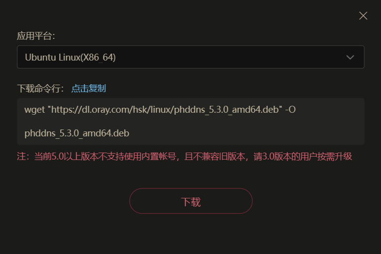
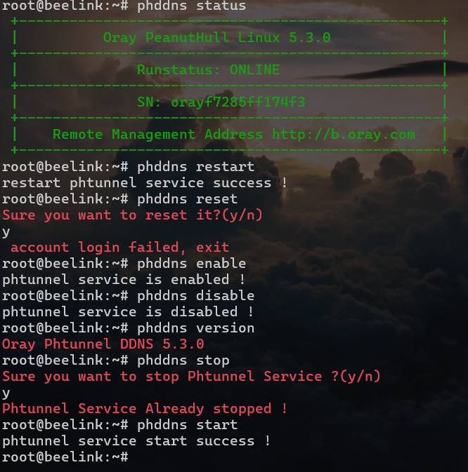
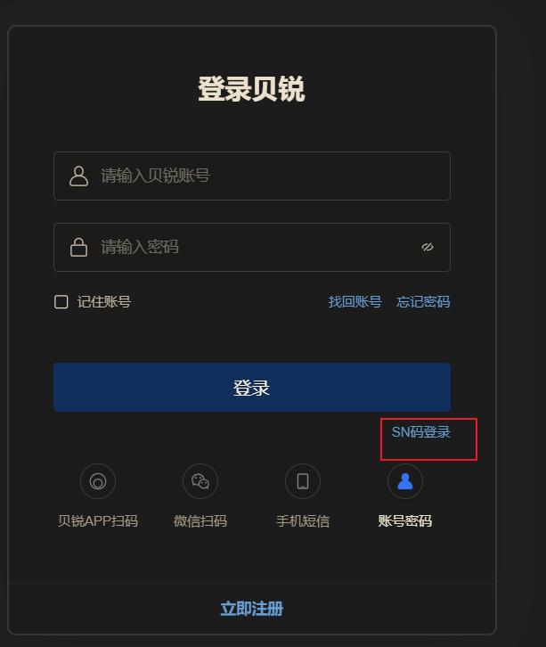
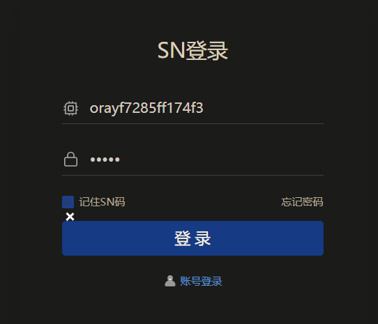
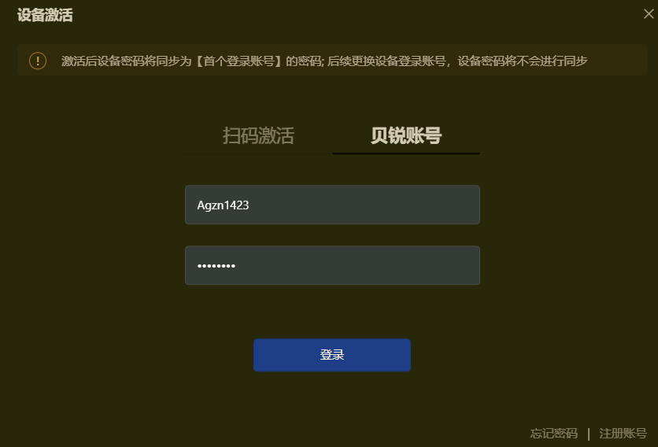
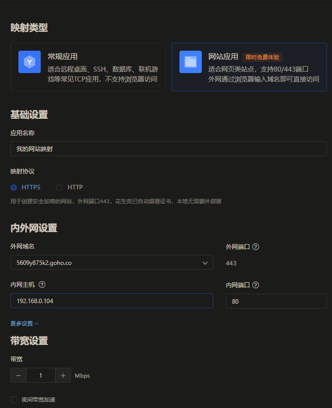
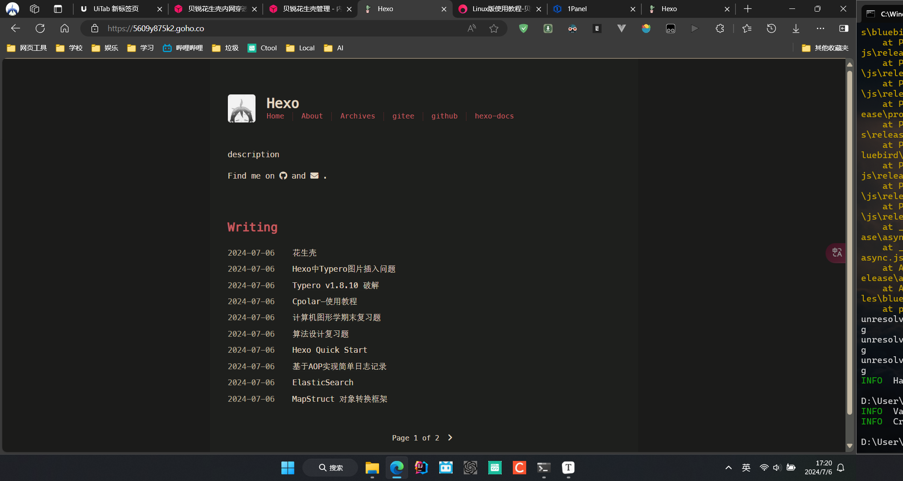

千里之行，始于足下。
花生壳客户端官方下载 - 贝锐花生壳官网 (oray.com)
优点: 固定IP
缺点: 限流1M , 只有2条隧道
下载

1
| wget "https://dl.oray.com/hsk/linux/phddns_5.3.0_amd64.deb" -O phddns_5.3.0_amd64.deb
|
Linux版使用教程-贝锐官网 (oray.com)
安装
1
2
3
4
5
6
7
8
9
10
11
12
13
14
15
16
17
18
19
20
21
22
23
24
25
26
27
28
29
| root@beelink:~
正在读取软件包列表... 完成
正在分析软件包的依赖关系树... 完成
正在读取状态信息... 完成
注意，选中 'phddns' 而非 './phddns_5.3.0_amd64.deb'
下列【新】软件包将被安装：
phddns
升级了 0 个软件包，新安装了 1 个软件包，要卸载 0 个软件包，有 48 个软件包未 被升级。
需要下载 0 B/270 kB 的归档。
解压缩后会消耗 12.5 MB 的额外空间。
获取:1 /root/phddns_5.3.0_amd64.deb phddns amd64 5.3.0 [270 kB]
正在选中未选择的软件包 phddns。
(正在读取数据库 ... 系统当前共安装有 224640 个文件和目录。)
准备解压 /root/phddns_5.3.0_amd64.deb ...
正在解压 phddns (5.3.0) ...
正在设置 phddns (5.3.0) ...
in systemv
Installation, please later...
Successful installation of Phddns Service.
+--------------------------------------------------+
| Oray PeanutHull Linux 5.3.0 |
+--------------------------------------------------+
| SN: orayf7285ff174f3 Default password: admin |
+--------------------------------------------------+
| Remote Management Address http://b.oray.com |
+--------------------------------------------------+
N: 由于文件'/root/phddns_5.3.0_amd64.deb'无法被用户'_apt'访问，已脱离沙盒并 提权为根用户来进行下载。 - pkgAcquire::Run (13: 权限不够)
root@beelink:~
|
卸载
1
2
3
4
5
6
7
8
9
10
11
12
13
14
15
16
17
| root@beelink:~
正在读取软件包列表... 完成
正在分析软件包的依赖关系树... 完成
正在读取状态信息... 完成
下列软件包将被【卸载】：
phddns
升级了 0 个软件包，新安装了 0 个软件包，要卸载 1 个软件包，有 48 个软件包未 被升级。
解压缩后将会空出 12.5 MB 的空间。
您希望继续执行吗？ [Y/n] y
(正在读取数据库 ... 系统当前共安装有 224651 个文件和目录。)
正在卸载 phddns (5.3.0) ...
phdaemon: 未找到进程
phtunnel: 未找到进程
phddns_mini_httpd: 未找到进程
Remove Phtunnel Service Success.
Thanks For Using Phtunnel Service.
root@beelink:~
|
扩展功能
1
2
3
| root@beelink:~
Phtunnel Serive called with unknown argument
(phddns |start|status|stop|restart|reset|enable|disable|version)
|
- start 启动
- stop 停止
- status 状态
- restart 重启
- reset 重置
- enable 开机自启
- disable 取消开机自启
- version 查看版本号
注意: 除phddns version命令不需要管理员权限外,其他命令均需要管理员权限

使用
1、浏览器访问http://b.oray.com ，输入花生壳Linux 5.0在安装时产生SN码与默认登录密码admin登录。



激活成功后就可以正常使用了
添加映射
| 选项 |
描述 |
| 应用名称 |
自定义 |
| 应用图标 |
自行选择 |
| 映射类型 |
选择TCP |
| 映射模板 |
暂不选择模板 |
| 外网域名 |
选择用作外网访问的域名 |
| 外网端口 |
选择动态端口 |
| 内网主机 |
映射的Ubuntu系统内网IP地址 |
| 内网端口 |
映射的服务类型对应端口22 |
| 访问控制 |
设置在指定条件下才可访问映射 , 提升应用安全。针对网页类映射可支持设置访问密码 |
| 带宽 |
购买映射带宽后，可支持给映射分配额外带宽，这里保存默认 |
| 夜间带宽 |
18:00-次日8:00带宽速度提升100%，速度不低于5Mbps；带宽基数越大，夜间越快 |
贝锐花生壳管理 - 内网穿透 (oray.com)

内网主机 : 127.0.0.1也行
访问部署在linux 80 端口上的nginx

穿透成功